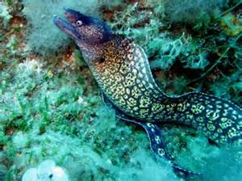

La murena
la famiglia dei murenidi comprende svariate specie di pesci conosciuti in italiano con il nome di Murene. Vivono nei mari tropicali (dove hanno la massima diversità) e temperati caldi, di solito su fondi duri a bassa profondità.
Sono di colore spesso brune, in molte specie però possono avere reticolature o macchie chiare. Alcune specie invece hanno colori gialli, arancioni e blu molto vivaci. Sono pesci in media piuttosto grandi, alcune specie (genere Gymnothorax e Strophidon sathete) possono superare i 3 m. Nel mar Mediterraneo è molto comune la specie Muraena helena e, piuttosto rara, Gymnothorax unicolor. Enchelycore anatina è stata catturata una sola volta in questo mare.
Questi anguilliformi hanno un corpo serpentiforme, leggermente compresso ai lati, non ricoperto da scaglie. Le pinne pettorali e ventrali sono assenti mentre la pinna dorsale e l'anale si prolungano senza discontinuità dalla testa alla coda mentre sul lato ventrale questa pinna è più corta. La testa è breve, i denti sono lunghi e appuntiti, spesso caniniformi. Le aperture branchiali sono piccole e rotonde. Molte specie hanno narici tubulari simili a brevi tentacoli. Alcune specie di questa famiglia sono dotate di una "mascella" aggiuntiva nell'esofago allo scopo di inghiottire al meglio prede voluminose. Sono predatori, cacciano pesci, molluschi (soprattutto cefalopodi come i polpi) e crostacei. Le larve sono leptocefali, come in tutti gli anguilliformi, che vivono nel plancton superficiale.
I morsi di questi pesci sono piuttosto dolorosi e sembra che nella saliva sia presente una tossina anche se in quantità minime. La fama sinistra che circonda le murene è in gran parte immeritata, la leggenda che gli antichi Romani nutrissero le murene dei loro vivai con schiavi è del tutto priva di fondamento. Alcune specie possono essere aggressive e mordere, soprattutto se ferite. Grandi specie tropicali possono essere pericolose a causa degli avvelenamenti da ciguatera.